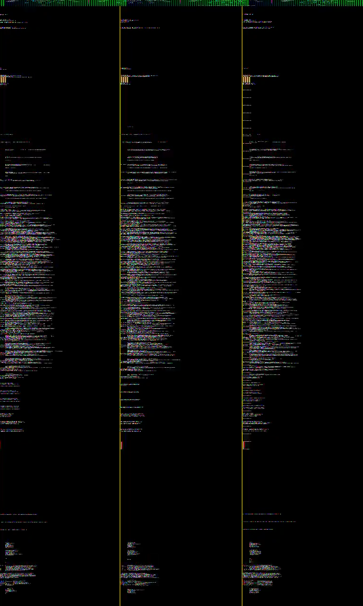

How to fix broken Video/Audio in scrcpy
I am using a GSI on my phone and when I try to use scrcpy I get this output:

The solution was simple (so simple, in fact, that I am angry at myself for not having thought of it sooner / finding it sooner). Execute this in your Terminal:
scrcpy --list-encoders
Then try codec after codec until one works, and use that one from now on. It really is that simple. For my Unihertz Titan Slim with a LinageOS 20 GSI it was:
scrcpy --video-codec=h264 --video-encoderc2.android.avc.encoder' --audio-codec=opus --audio-encoder='c2.android.opus.encoder'
More readable:
- scrcpy
- --video-codec=h264
- --video-encoderc2.android.avc.encoder'
- --audio-codec=opus
- --audio-encoder='c2.android.opus.encoder'
---
- scrcpy
- --video-codec=h264 --video-encoderc2.android.avc.encoder'
- --audio-codec=opus --audio-encoder='c2.android.opus.encoder'
Sources:
2023.07.16 - 19:45